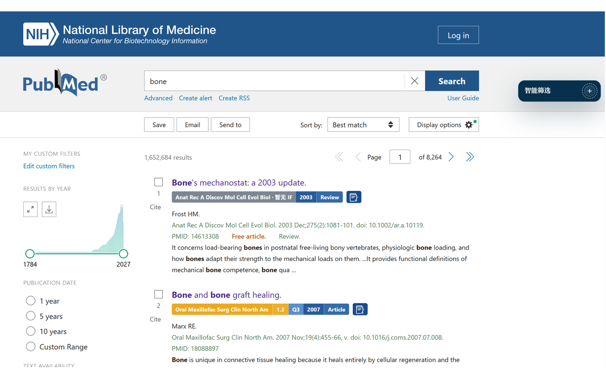
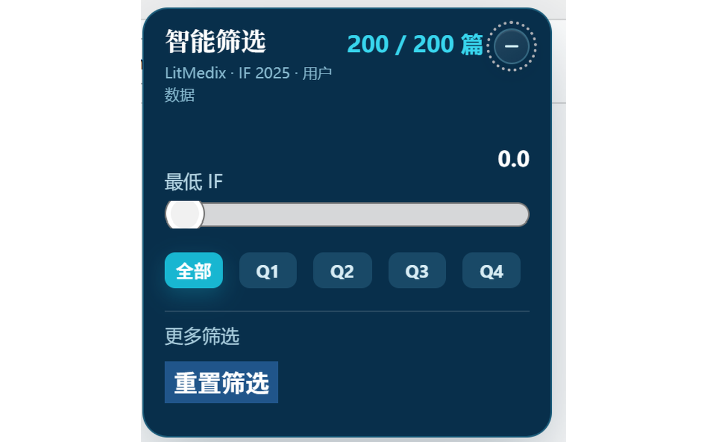
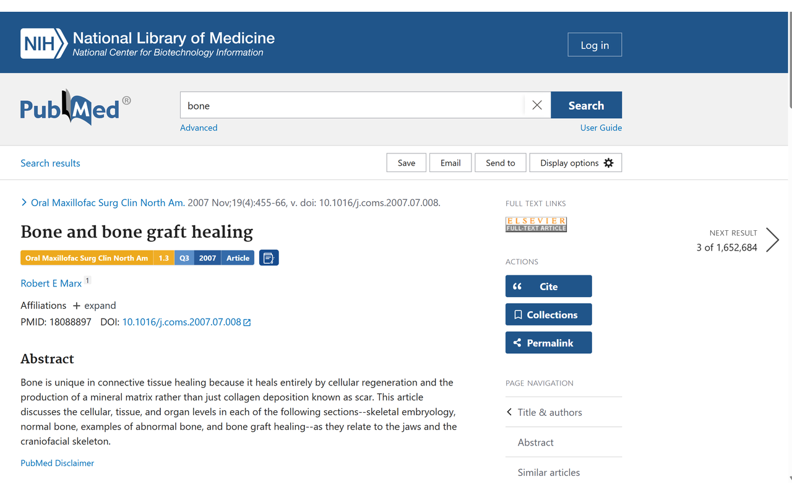
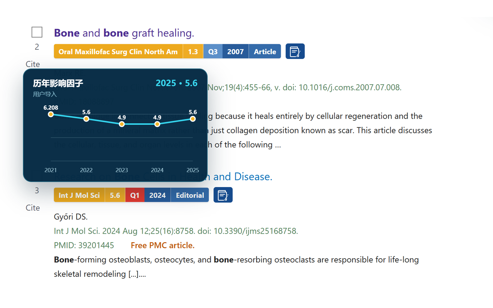
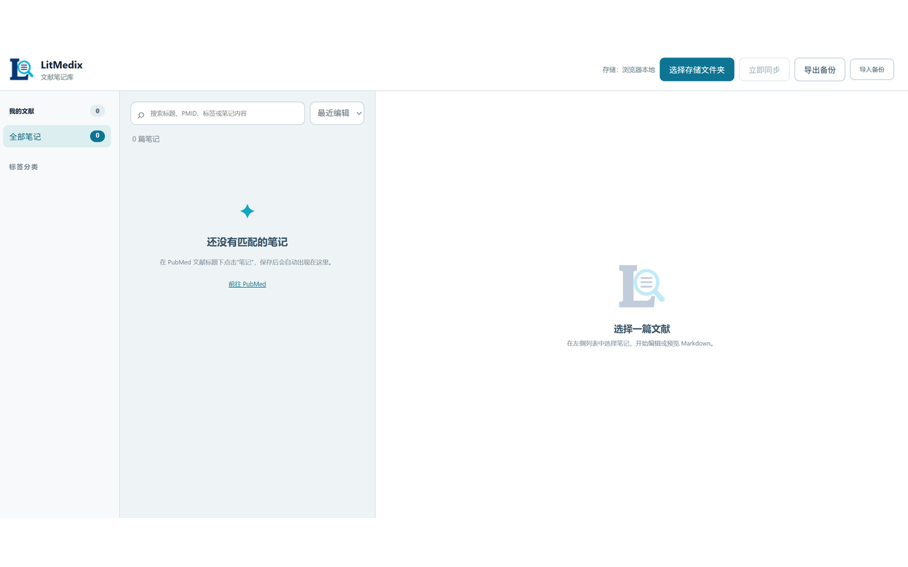

期刊指标就在标题下
在 PubMed 检索结果与详情页直接查看期刊名称、影响因子、JCR 分区、发表年份和文献类型。
期刊指标、智能筛选、历年 IF 趋势与本地 Markdown 笔记，直接出现在你熟悉的 PubMed 页面中。


LitMedix 不是另一个文献数据库。它留在 PubMed 里，在标题下方补充决策信息，在页面侧边提供筛选，在需要时打开笔记。
在 PubMed 检索结果与详情页直接查看期刊名称、影响因子、JCR 分区、发表年份和文献类型。
按最低 IF、Q1–Q4、标题关键词、年份与笔记状态组合筛选，让高价值文献先出现。
悬停影响因子即可查看历年变化折线图，快速识别期刊指标的趋势与稳定性。
为文献建立 Markdown 笔记、标签和分类；支持搜索、导入、导出与本地备份。
检索结果页与文献详情页采用一致的信息条：期刊、IF、分区、年份、文献类型和笔记入口一眼可见。


用户导入包含历年数据的 CSV 后，鼠标悬停影响因子即可看到年度折线图。无需离开 PubMed，也无需重复查询。
独立笔记管理页把文献、Markdown 内容和标签放在同一工作区。支持文件夹备份，也可以随时导入或导出。

在任意网页选中文献标识，点击“PubMed 检索”，LitMedix 会在新标签页打开对应文献。